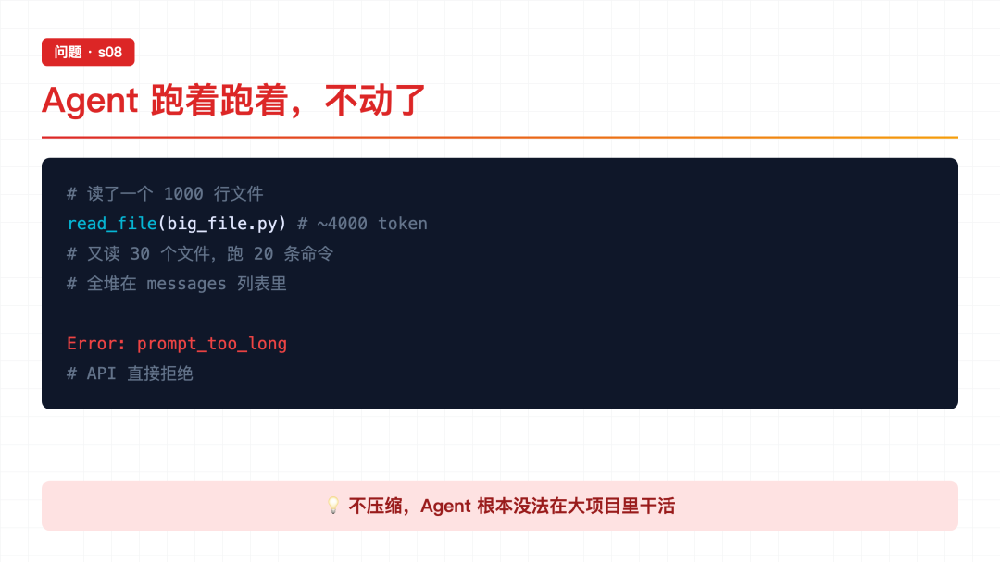
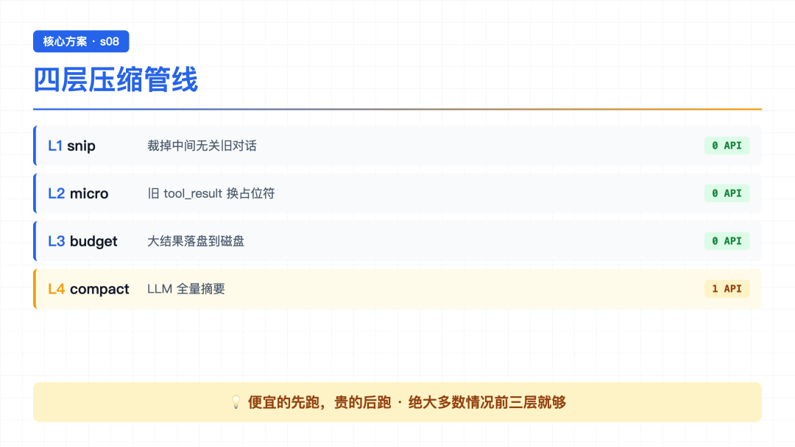
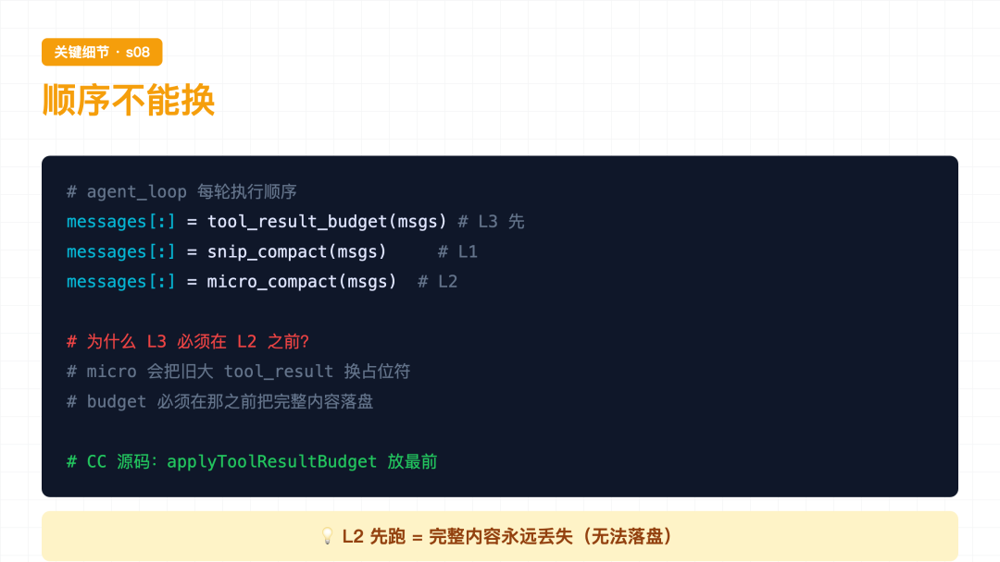
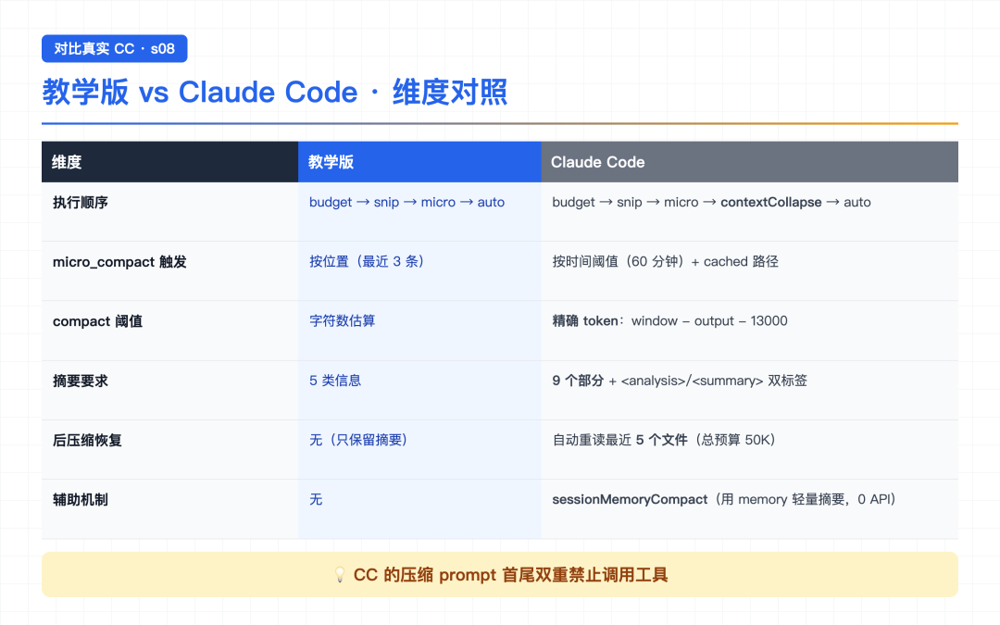

大家好，我是郑同学。周末赶紧多学学[旺柴]
上一节 s07 读到结尾，作者留了个钩子：按需加载解决了"不该带的不要带"。但 Agent 连续工作 30 分钟后，messages 列表塞满了中间过程——旧的 tool_result、过时的文件内容、用完的技能内容，占着上下文但不产生价值。
我当时就想：是啊，s07 的 load_skill 加载的技能内容，用完了就该丢，不丢就一直占位置。但 messages 是追加式的，怎么优雅地"丢"？
s08 给出的答案特别直白——上下文总会满，要有办法腾地方。四层压缩策略，便宜的先跑，贵的后跑。
● ● ●

问题：上下文满了
Agent 跑着跑着，不动了。
手里有 bash、有 read、有 write，能力是够的。但它读了一个 1000 行的文件（~4000 token），又读了 30 个文件，跑了 20 条命令。每条命令的输出、每个文件的内容，全都堆在 messages 列表里。
上下文窗口是有限的。满了之后，API 直接拒绝：
Error: prompt_too_long
不压缩，Agent 根本没法在大项目里干活。
● ● ●

方案：四层压缩管线
作者的思路是——分四层处理，从最便宜的开始，一层不够再加一层。
前三层都是纯文本/结构操作，不调 LLM。只有 L4 才花一次 API 调用让 LLM 做摘要。
注意：上面的编号是原文 README 按功能类别给的（先讲裁消息、再讲占位、再讲落盘、最后讲摘要）。实际跑起来的执行顺序不一样，等四层都讲完，我在最后一节专门解释。
● ● ●
Agent 跑了 80 轮对话，messages 攒了 160 条。最前面的"帮我创建 hello.py"和当前工作几乎无关了，但全占着位置。
def snip_compact(messages, max_messages=50): if len(messages) <= max_messages: return messages keep_head, keep_tail = 3, max_messages - 3 head_end, tail_start = keep_head, len(messages) - keep_tail # 边界保护：不能把 tool_use 和 tool_result 拆开 if head_end > 0 and _message_has_tool_use(messages[head_end - 1]): while head_end < len(messages) and _is_tool_result_message(messages[head_end]): head_end += 1 if (tail_start > 0 and tail_start < len(messages) and _is_tool_result_message(messages[tail_start]) and _message_has_tool_use(messages[tail_start - 1])): tail_start -= 1 snipped = tail_start - head_end return messages[:head_end] + [ {"role": "user", "content": f"[snipped {snipped} messages]"} ] + messages[tail_start:]
逐行读：
assistant(tool_use) 和后面的 user(tool_result) 拆开——拆开了模型就看不懂这条工具调用的结果了。读到这里我专门停下来想了下这个边界保护——它体现了对消息结构的尊重。messages 不是简单的文本拼接，而是 assistant/user 交替的结构化对话。裁剪要顺着这个结构来，不能暴力切。
裁完之后，中间塞一个占位符 [snipped N messages]——告诉模型"这里省略了一些"，而不是偷偷删掉。
● ● ●
L1 裁完了消息条数，但消息内部的 tool_result 内容还在累积。
Agent 连续读了 10 个文件。第 1-7 次的完整内容还躺在上下文里，早就不需要了，但占着大量空间。
KEEP_RECENT_TOOL_RESULTS = 3 def micro_compact(messages): tool_results = collect_tool_result_blocks(messages) if len(tool_results) <= KEEP_RECENT_TOOL_RESULTS: return messages # 只保留最近 3 条完整内容，更旧的换占位符 for _, _, block in tool_results[:-KEEP_RECENT_TOOL_RESULTS]: if len(block.get("content", "")) > 120: block["content"] = "[Earlier tool result compacted. Re-run if needed.]" return messages
逻辑特别简单：
[Earlier tool result compacted. Re-run if needed.]。"Re-run if needed." 这句话很关键——告诉模型内容被压缩了，需要可以重新调工具拿。这比直接删除好太多了——删除是"信息丢失"，占位是"信息降级"。
读完这段我有个疑问：那 read_file 的文件内容怎么办？后面还要用怎么办？读 README 才知道——教学版接受"必要时重新读取"，CC 真实实现有更精细的 readFileState 机制（compact 后按预算恢复最近文件）。教学版是 trade-off，CC 是生产级。
● ● ●
L2 清掉了旧的，但单条新结果可能就有 500KB——一个 cat 大文件的输出就能打满上下文。
def tool_result_budget(messages, max_bytes=200_000): last = messages[-1] blocks = [(i, b) for i, b in enumerate(last["content"]) if b.get("type") == "tool_result"] total = sum(len(str(b.get("content", ""))) for _, b in blocks) if total <= max_bytes: return messages # 超过 200KB，从最大的开始落盘 ranked = sorted(blocks, key=lambda p: len(str(p[1].get("content", ""))), reverse=True) for idx, block in ranked: if total <= max_bytes: break block["content"] = persist_large_output( block["tool_use_id"], str(block["content"]) ) total = recalculate_total(blocks) return messages
逐行读：
.task_outputs/tool-results/。模型看到标记后知道完整内容在磁盘上，需要时可以重新读。
● ● ●
前三层都是纯文本/结构操作，但它们再聪明也只是机械裁剪，没法"理解对话"。在超大项目中连续工作 30 分钟后，token 仍然可能超过阈值。
这时候才动用最贵的手段——调 LLM 做摘要。
def compact_history(messages): transcript_path = write_transcript(messages) # 1. 保存完整对话 summary = summarize_history(messages) # 2. LLM 生成摘要 return [{"role": "user", "content": f"[Compacted]\n\n{summary}"}] # 3. 替换消息列表
三步流程：
.transcripts/，JSONL 格式。可恢复记录保留，但模型当下看不到细节了。[Compacted] 摘要。这是唯一花 API 调用的层。前三层再聪明也只是"机械操作"，L4 才是真正"理解对话"——让 LLM 自己判断什么是重要的、什么可以丢。
熔断器：连续失败 3 次后停止重试，防止死循环浪费 API 调用。
● ● ●
四层管线全跑完了，但有时候 API 还是返回 prompt_too_long（413）——上下文增长速度快于压缩触发速度。
def reactive_compact(messages): transcript = write_transcript(messages) tail_start = max(0, len(messages) - 5) # 同样不能拆开 tool_use/tool_result if (tail_start > 0 and tail_start < len(messages) and _is_tool_result_message(messages[tail_start]) and _message_has_tool_use(messages[tail_start - 1])): tail_start -= 1 summary = summarize_history(messages[:tail_start]) return [{"role": "user", "content": f"[Reactive compact]\n\n{summary}"}] + messages[tail_start:]
比 compact_history 更激进：从尾部回退，保留最后 5 条，前面的全部摘要。reactive 有重试上限（默认 1 次），再失败就抛异常，不无限循环。
完整的错误恢复逻辑留给 s11——这里只是兜底。
● ● ●

关键细节：执行顺序
前面按 L1→L2→L3→L4 讲解，但实际跑起来的顺序是 L3 → L1 → L2 → L4：
def agent_loop(messages): while True: # 三个预处理器（0 API 调用） messages[:] = tool_result_budget(messages) # L3 先跑：大结果落盘 messages[:] = snip_compact(messages) # L1：裁中间 messages[:] = micro_compact(messages) # L2：旧结果占位 # 还不够？LLM 摘要（1 API 调用） if estimate_token_count(messages) > THRESHOLD: messages[:] = compact_history(messages) # L4 try: response = client.messages.create(...) except PromptTooLongError: ... # reactive 应急
为什么 L3 必须最先跑？ 因为 L2 会把旧的大 tool_result 替换成一行占位符。如果 L2 先跑，L3 就再也拿不到完整内容落盘了——完整内容会永远丢失。
为什么 L1 在 L2 之前？ L1 裁消息条数，L2 处理消息内部的 tool_result。先裁条数（减少要处理的消息），再处理剩下的内容，效率更高。
完整执行流程图：
messages[] ↓ [L3 budget] → 大结果落盘到磁盘（0 API） ↓ [L1 snip] → 裁掉中间无关旧对话（0 API） ↓ [L2 micro] → 旧 tool_result 换占位符（0 API） ↓ { token 还超阈值？ } ├─ No → 直接调 LLM └─ Yes → [L4 compact] LLM 全量摘要（1 API） ↓ 调 LLM ↓ { API 报 prompt_too_long？ } └─ Yes → [reactive] 应急裁剪（1 API）
便宜的先跑贵的后跑——前三层 0 API，第四层才花 1 次 API，应急才再花 1 次。绝大多数情况下，前三层就够了，根本用不到 L4。
● ● ●
这是我最关心的问题——L2/L3 把内容压没了，模型后面要用怎么办？ 穷举几个场景看看：
比如第 5 轮读的 config.py 内容被压成 [Earlier tool result compacted. Re-run if needed.]。
模型怎么拿回来？ 直接再调一次 read_file("config.py")。代价是多一次工具调用，但拿到的是最新内容（可能文件已经被改过了），反而更准。
比如 grep -r 输出 500KB 被 L3 落盘到 .task_outputs/tool-results/，上下文里只留
模型怎么拿回完整内容？ 看到标记后，直接用 bash 工具读磁盘文件：
run_bash("cat .task_outputs/tool-results/abc123.txt")
或者重新跑一次原命令（如果命令是确定性的）。
比如 50 轮对话被 L4 压成一条 [Compacted] 摘要。
模型怎么拿回细节？ 这时候只能靠摘要里的指引——摘要会保留"已改文件"、"关键发现"、"用户约束"等信息。如果要找回更早的具体内容，可以从 .transcripts/ 里翻（教学版没提供这个工具，CC 真实实现有 read_file 可以读 transcript）。
这种最麻烦——具体行号已经被摘要丢掉了。模型只能重新读一次文件，从当前状态推断。
这是压缩的必然代价。压缩是"信息降级"不是"信息保留"。从"完整内容"降级到"占位符 + 重新获取指引"——信息没有丢失，只是变得惰性。模型永远知道"需要时可以拿回来"，但拿回来要花一次工具调用。
所有"丢失"的内容都有重新获取的路径。这就是为什么占位符要写 "Re-run if needed."、L3 落盘要留标记——告诉模型内容没真丢，只是换了地方。
● ● ●
光看代码没感觉，跑一下。
第一个 prompt——"Read README.md, then read code.py, then read s01_agent_loop/README.md"
s08 >> Read README.md, then read code.py, then read s01_agent_loop/README.md > read_file > read_file [L2 micro_compact] 第 1 个 tool_result 被占位 > read_file [L2 micro_compact] 第 2 个 tool_result 被占位
连续读多个文件，旧的 tool_result 被 L2 压缩成占位符。Agent 能继续工作，因为它知道"需要时可以重新读"。
第二个 prompt——"Read every file in s08_context_compact/"
s08 >> Read every file in s08_context_compact/ > read_file [L3 tool_result_budget] 单条结果 500KB，落盘到 .task_outputs/
一次性读大量内容，L3 触发大结果落盘。上下文里只留前 2000 字符预览。
● ● ●

维度对照表：教学版 vs CC
教学版的四层管线已经很完整了，但读到"深入 CC 源码"那节，我才发现真实 CC 走得更远：
几个让我印象深刻的差距：
精确 token 计算。教学版用 len(str(msgs)) 估算，CC 用真正的 tokenizer。估算省事但不准——中文一个字 ≈ 1 字符但可能是 2-3 token。
摘要 prompt 极其严格。CC 的压缩 prompt 有两个硬性要求：
CRITICAL: Respond with TEXT ONLY. Do NOT call any tools.，末尾再 REMINDER 一次为什么这么严格？因为压缩本身是一次 LLM 调用，模型可能试图调工具"再读一次文件"——那会触发新的工具结果，进一步撑爆上下文。
后压缩恢复机制。教学版只保留摘要就结束了，CC 会自动重新附加最近 5 个文件（每个最多 5K token，总预算 50K token）。这一步正好解决了我前面担心的"compact 之后内容丢了怎么办"——CC 会自动把最近文件重新读回来，不用模型自己想起来去读。
contextCollapse 和 sessionMemoryCompact。CC 还有两个独立机制：
教学版的简化是刻意的——micro_compact 用文本占位、token 用字符估算、后压缩恢复省略。先把"便宜的先跑贵的后跑"这个核心设计讲清楚，生产级的复杂性后面再展开。
● ● ●
L4 的 compact_history 会调 LLM 做摘要，但如果 LLM 自己也超长怎么办？
作者的答案是——熔断器：连续失败 3 次后停止重试。
MAX_CONSECUTIVE_AUTOCOMPACT_FAILURES = 3
为什么是 3 次？我猜是个经验值——1 次失败可能是偶发，2 次可能是 prompt 问题，3 次基本就是系统性问题，再试也是浪费 API 调用。
读完这段我想起 s03 的结论：安全要靠代码强制。s08 在这里用同样的原则——失败要靠熔断器兜底，不能让 Agent 陷入死循环。
● ● ●
读完 s08，我自己最大的感悟是——压缩不是"删"，而是"降级"。
前几节的 Agent 没有任何上下文管理，messages 无限膨胀。s08 给出四层管线：
便宜的先跑，贵的后跑——前三层 0 API，绝大多数情况下就够。只有真的扛不住了，才动用最贵的 L4。
几个关键点回顾：
压缩的本质是"信息降级"而不是"信息删除"——四个关键字: 落盘、裁剪、占位、摘要，从完整内容降级到占位符 + 重新获取指引，模型永远知道"需要时可以拿回来"。
● ● ●
压缩让 Agent 能跑很久不会崩。但每次压缩后，用户之前告诉它的偏好、约束也跟着丢了。
比如用户说"用中文回复"、"代码风格用 4 空格缩进"、"不要用 emoji"——这些是跨会话的偏好，不应该因为一次 compact 就消失。
能不能让 Agent 有选择地记住重要的事？下一节 s09 Memory，就读这个——三个子系统：选择记什么、提取关键信息、整理巩固。跨压缩、跨会话。
源码地址：https://github.com/shareAI-lab/learn-claude-code